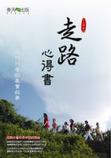

|
|
| 首頁 |
|
 走路心得書 序至簡至易的平常走路，與無上甚深的宗教秘法似乎沒有關係，但兩者卻是同一件事。 古代的大成就者無一不是因發現了走路的秘密而得以成就的。走路雖然是甚深的宗教秘密，但常人卻可以隨時隨地地在平常的生活中去體驗它。 一個人一但體驗到走路的奇蹟，智慧就會迅速顯發。與其同時，身體會快速康復。其人開始變得輕鬆自在，內心清淨，外貌光亮。此時會發現自己原來如此漂亮。由此而知，就世間的功用行而言，走路的奇蹟亦是於所有方法中處於無與倫比的地位。 人難免痛苦。有時會因痛苦來如迅雷難以迴避，有時因痛苦太過強大，而痛不欲生。此時此人若能簡單地進行室內或戶外走路，大約在一個星期左右，痛苦即可自動消退。多年來很多人以此簡單的步行而快速結束其不可承受的內心痛苦，無一人不靈驗。 除了痛苦之外就是煩惱。煩惱就是頭腦的胡思亂想。降服煩惱就是降服頭腦。世間一切降服頭腦的方法都是頭腦編織的胡思亂想，其方法的本質就是煩腦。而走路時不需要頭腦，同時因專注走路，頭腦會迅速被降伏。 若能降伏頭腦，修行將一日千里。因走路可以輕易簡單地降伏頭腦，所以走路是一切秘法之首。 本書收集了如是禪的朋友們幾年來的走路心得，供有心人參閱，以早日明瞭修行的入手處，修行的真實處，以及修行中的種種顛倒處。 真實修行是超越一切理論學說的，是平等的，是任何人、任何時候都可以去實行的。真實的修持簡單易行，且行之必果，效驗神奇不可思議。 若需進一步了解走路的重要及如何走路，可參閱光明系列叢書《走路的秘密》、《腳下光明》、《光明自在行》。 歷史上的大發明家、大科學家、大智慧者都有一個共同的特點：熱愛遠足。由此可知，走路與開啟智慧有其不可思議的聯繫。 |
| 著作權所有 請勿任意轉載 Copyright © 2000-2026 Is Zen Center All Rights Reserved |